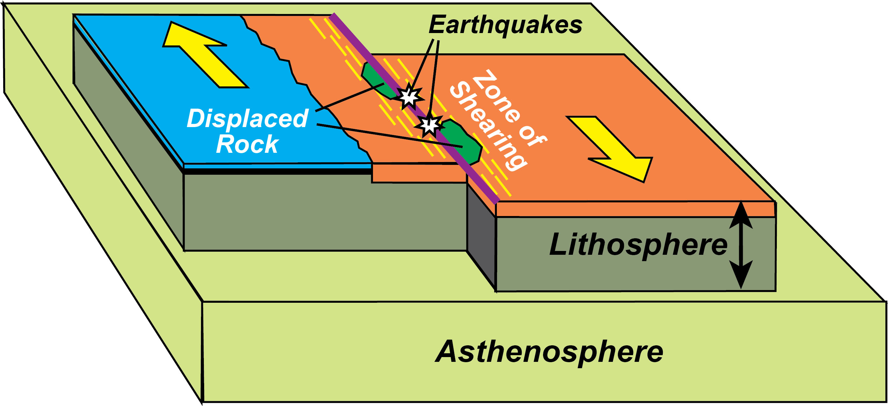
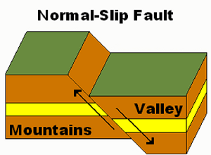
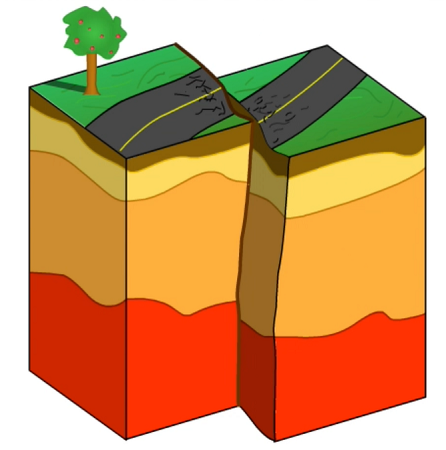

Convergent boundaries occur when two plates move towards each other. When oceanic and continental plates collide, the denser oceanic plate is forced beneath the lighter continental plate, a process known as subduction. This creates a deep-sea trench and often results in the formation of a volcanic arc or mountain range, such as the Andes in South America. When two oceanic plates converge, the older and denser one subducts beneath the younger one, resulting in island arcs such as the Japanese Islands. Finally, when two continental plates converge, neither can be subducted, and the collision can result in the formation of large mountain ranges such as the Himalayas.

Divergent boundaries are the boundaries where two plates move away from each other. This movement results in the creation of new crustal material as magma from the mantle rises to the surface, cools and solidifies, leading to the formation of a new oceanic crust. In some cases, this process can also cause volcanic eruptions, earthquakes, and the formation of fissures and rift valleys. One of the most famous divergent boundaries is the Mid-Atlantic Ridge, which runs from the Arctic Ocean to the Atlantic Ocean, and marks the boundary between the North American and Eurasian plates.
Transform boundaries occur when two plates slide past each other in opposite directions, with no net creation or destruction of lithosphere. This movement creates intense pressure and stress on the plates, leading to the formation of faults and fractures in the crust, which can result in earthquakes. The most famous example of a transform boundary is the San Andreas Fault in California, which marks the boundary between the North American and Pacific plates.
Normal faults are caused by tensional forces that pull the rock apart, causing it to break and move downward along the fault line. The hanging wall, which is the rock above the fault line, moves downward relative to the footwall, which is the rock below the fault line. This type of fault is often associated with areas of divergent plate boundaries, where the Earth's crust is being pulled apart, and the resulting tensional forces cause the rock to break along a normal fault. Examples of normal faults include the Basin and Range Province in the Western United States and the East African Rift Valley.
Reverse faults are the opposite of normal faults and occur when compressive forces push the rock together, causing it to break and move upward along the fault line. The hanging wall, which is the rock above the fault line, moves upward relative to the footwall, which is the rock below the fault line. Reverse faults are typically associated with areas of convergent plate boundaries, where the Earth's crust is being pushed together, and the resulting compressive forces cause the rock to break along a reverse fault. Examples of reverse faults include the thrust faults of the Rocky Mountains and the Himalaya
Strike-slip faults are caused by shearing forces that push the rock on either side of the fault line horizontally past each other. Unlike normal and reverse faults, where the movement is vertical, the movement along strike-slip faults is predominantly horizontal. Strike-slip faults are often associated with areas of transform plate boundaries, where the Earth's crust is being sheared, and the resulting forces cause the rock to break along a strike-slip fault. The San Andreas Fault in California is an example of a prominent strike-slip fault
Plate boundaries are the regions where tectonic plates meet, interact, and move in relation to one another. There are three types of plate boundaries: divergent, convergent, and transform. At divergent boundaries, plates move away from each other, creating new crust. At convergent boundaries, plates collide and can create subduction zones, where one plate sinks beneath another. At transform boundaries, plates slide past each other horizontally, causing earthquakes. The study of plate boundaries is essential in understanding the Earth's geology, including volcanic activity, seismic activity, and mountain building.
{kind=link}
{kind=link}
{kind=link}
{kind=link}
{kind=link}